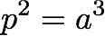
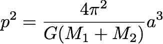

The third law describes the relationship Kepler observed between a planet's distance from the sun and the time it takes to make one complete orbit around the sun. Kepler stated that the square of a planet's orbital period in years was equal to that planet's distance from the sun in Astronomical Units (AU) cubed, where and AU is the average distance of the Earth to the Sun (149 million kilometers).

orbit_kepler.py for Kepler's Third Law
of planetary motion.
This program will ask the user for the name of the planet
and its orbital period in years.
It should then calculate the average distance from the sun in astronomical units (AU)
of this planet and display the result to the user. Make sure to follow
the Python Style Guide when writing your program.
Test your code with the following values for planets orbiting the Sun:
| Planet | Period | AU from Sun |
|---|---|---|
| Earth | 1 | 1 |
| Saturn | 29.660974748248961 | 9.58201720 |
| Mercury | 0.24084173359179098 | 0.38709821 |

The big G in Newton's equation is the Gravitational Constant from physics, and is in terms of meters cubed over kilograms times seconds squared.
orbit_kepler.py into orbit_newton.py
to use Newton's reformulation of Kepler's Third Law. The user will be asked to enter the
name of the planet, the orbital period of the planet in days, the mass of the star in kilograms,
and the mass of the planet in kilograms. Your formula requires the period in seconds, you will
need to convert your input. Calculate the distance of the star from the planet next,
and output the result to the user. Since Newton's law uses meters instead of
AU, you will have to convert the output into the appropriate value, using the
definition of 1 AU as 149 million kilometers.
Evaluate orbit_newton.py using the following data, based on the best
estimates we have about recently
discovered exoplanets that may fall into the
Habitable Zone for life. Report your
results for the orbital period of these planets in the Lab Evaluation
described below.
| Planet | Orbital Period in Days | Star Mass in kg | Planet Mass in kg |
|---|---|---|---|
| Gliese 667 C c | 28.143 | 6.1659 * 10^29 | 2.2693 * 10^25 |
| Proxima Centauri b | 11.186 | 2.4459 * 10^29 | 7.5852 * 10^24 |
| Kepler 22 b | 289.86 | 1.9293 * 10^30 | 3.1532 * 10^26 |
| HD 40307 g | 197.8 | 1.4917 * 10^30 | 4.891 * 10^25 |
| Gliese 163 c | 25.631 | 7.956 * 10^29 | 4.359 * 10^25 |
| Gliese 581 d | 66.87 | 6.1659 * 10^29 | 2.2693 * 10^25 |
| Kepler 452 b | 384.843 | 2.0626 * 10^30 | 2.986 * 10^25 |
Hint: your answer for Gliese 667 C c should be close to 0.1. If you are getting an answer in the billions, or billionths, or anything like that, your program is wrong.
math.pi,
namely 3.1415926535897931. This is only an estimate of Pi; others have calculated
1,000,000 digits of Pi, but this is still only an estimate of this irrational number.
Test out the sensitivity of your calculations above to different values of Pi, using 3.14 and
3.14159, and record your results in Lab Evaluation. Be sure to return your
code to use the original math.pi before you turn in your code.
Lab Evaluation:
orbit_kepler.py
when writing orbit_newton.py?
orbit_newton.py, the Mass of the planet or period of the planet? Why?
orbit_newton.py?
Make sure you run orbit_kepler.py and orbit_newton.py
through the Python
style guide checking program before you turn in your work. If you worked with a
partner, you both must hand in the files you wrote, with both of your names in the header
at the top of the file.
orbit_kepler.py
orbit_newton.py